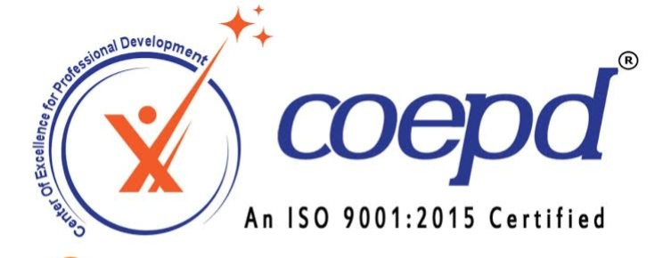

Career restart focus
A supportive pathway that rebuilds confidence after a career gap, maternity break or time away from work.

A 6-Month Career Transformation Program designed for Career Gap Candidates, Career Restarters and Career Changers. Experience industry-oriented training, hands-on projects, professional documentation, one-to-one mentoring, interview preparation and guaranteed career-transition learning in a structured office environment.
DCBA is not a regular Business Analyst training program. It helps career gap candidates rebuild confidence, develop industry-ready capability and transition into corporate Business Analysis roles.
A supportive pathway that rebuilds confidence after a career gap, maternity break or time away from work.
Requirements, Agile, analytics, documentation and tools connected through realistic business projects.
Mentoring, resume building, soft skills, mock interviews and a Placement Guarantee Program for a confident comeback.
This program is specifically created for people ready to restart their professional journey through Business Analysis.
Minimum requirement: graduation in any discipline and good English communication skills. No coding experience or IT background is required.
Whether you took a career break, prepared for competitive examinations, changed your career plans, or are returning to work after a gap, DCBA helps you confidently transition into the Business Analysis profession with structured learning, hands-on projects, professional mentoring, and a Placement Guarantee Program.
Plan your career restart →BA fundamentals, communication skills, requirement gathering, business processes and professional mindset.
JIRA, Confluence, Microsoft Visio, professional documentation, SQL basics and assignments.
Power BI, Tableau, Microsoft Azure, Balsamiq, business scenarios and case studies.
Capstone Projects 1 and 2, business documentation, client scenarios and problem solving.
Two live industry projects, professional reviews, one-to-one mentoring, resume preparation and mock interviews.
Capstone Project 3, placement preparation, HR and technical interviews, corporate readiness and transition support.
Stakeholder map, AS-IS/TO-BE flows, BRD, stories and acceptance criteria.
Process analysis, wireframes, requirements traceability and UAT plan.
SQL exploration, Power BI dashboard and executive recommendation.
Build confidence with the platforms, data skills and product thinking used by modern delivery teams.
Practitioner-led sessions are reinforced by individual career planning, weekly progress tracking and focused reviews—not passive video consumption.
Before enrollment, eligible candidates receive a formal enrollment agreement outlining the complete program structure, learner responsibilities, evaluation process, attendance requirements, project completion expectations, and the placement guarantee terms and conditions.
Written terms shared before enrollment.
Mutual accountability from COEPD and the learner.
Clear training and evaluation milestones.
Documented expectations for all required work.
Reviews, feedback and interview readiness.
Placement guarantee terms and eligibility criteria.
The DCBA program is designed as a structured career transformation journey. Eligible participants complete the full curriculum, practical assignments, live projects, capstone projects, evaluations and interview preparation. Upon successful completion of the program requirements and the terms outlined in the enrollment agreement, learners enter the guaranteed placement process for suitable Business Analyst opportunities.
The guarantee applies only to eligible learners who successfully meet the attendance, evaluation, project-completion and other requirements stated in the Career Commitment Agreement.
Explore career outcomes achieved by COEPD learners across Business Analysis and related professional roles.
HIRING ECOSYSTEM
Our learners have successfully secured opportunities with leading global organizations.


No matching questions. Speak with an advisor for personal guidance.
It suits graduates returning after a break, women re-entering work, government-exam aspirants, fresh graduates and professionals changing domains.
Graduation in any discipline and good English communication skills. No coding background or prior IT experience is required.
Yes. Guided learning, mentor feedback, a project portfolio and interview practice help you explain your transition positively.
Eligible learners who meet the attendance, evaluation, project and agreement requirements enter the placement process for suitable analyst opportunities.
JIRA, Confluence, Microsoft Visio, Balsamiq, Power BI, Tableau, SQL, Microsoft Azure and product thinking.
Get clarity on curriculum, batches, projects, certification and career support.